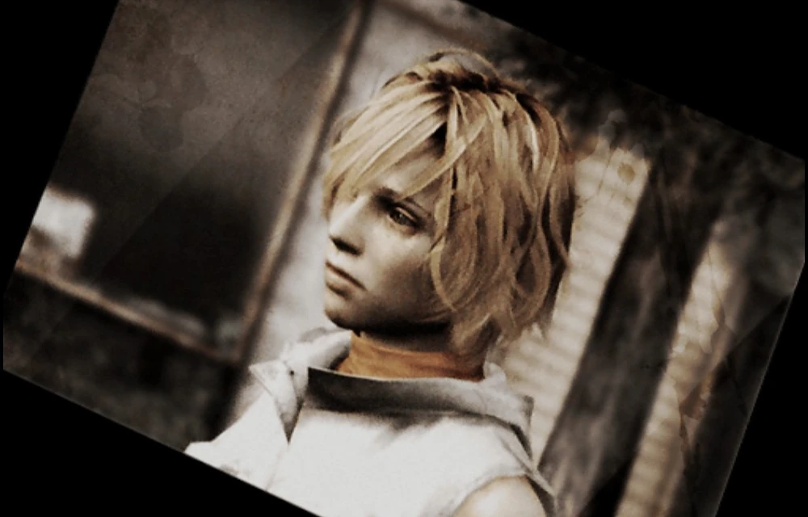
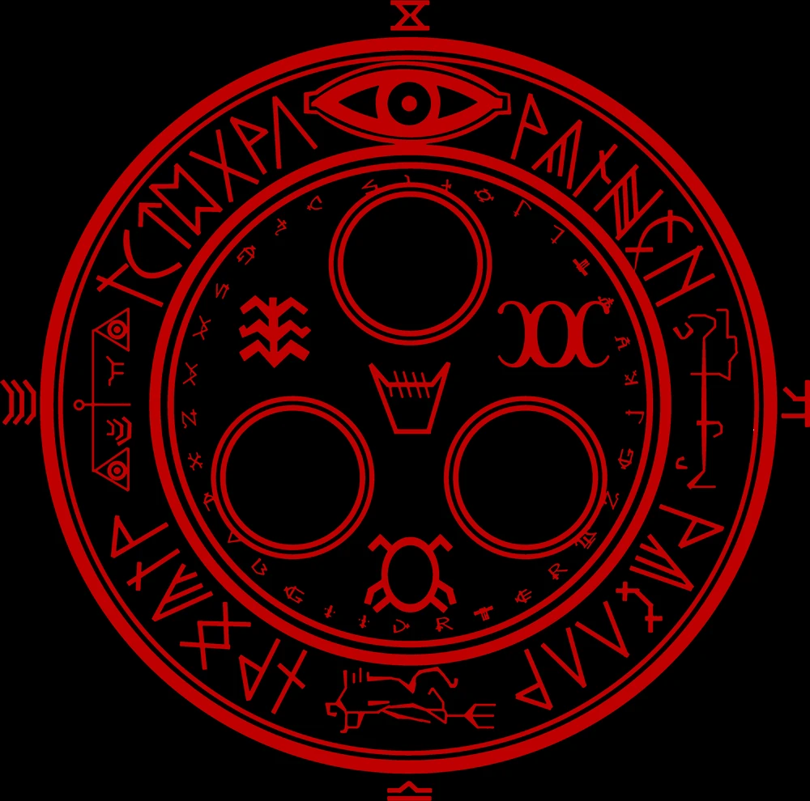
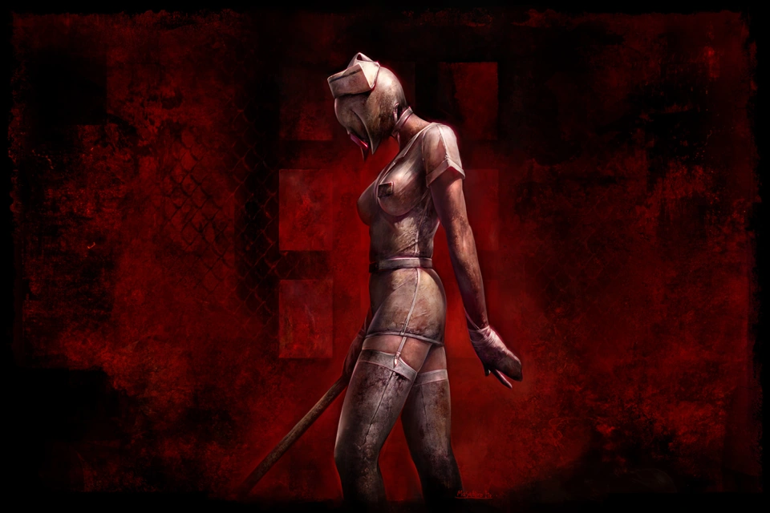
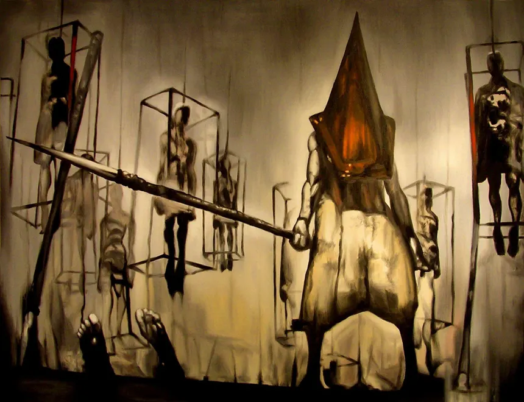
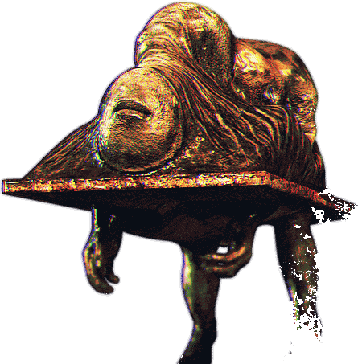
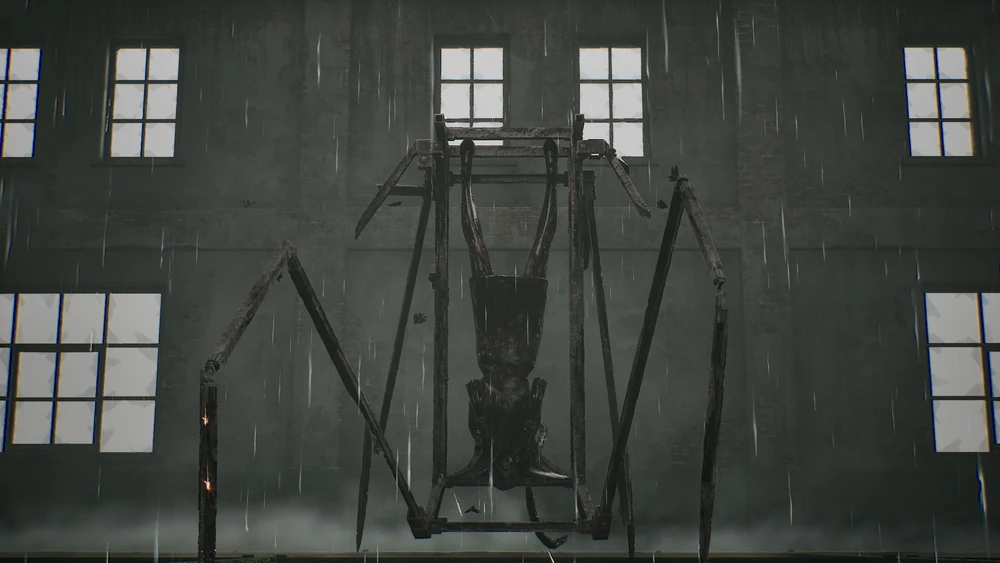
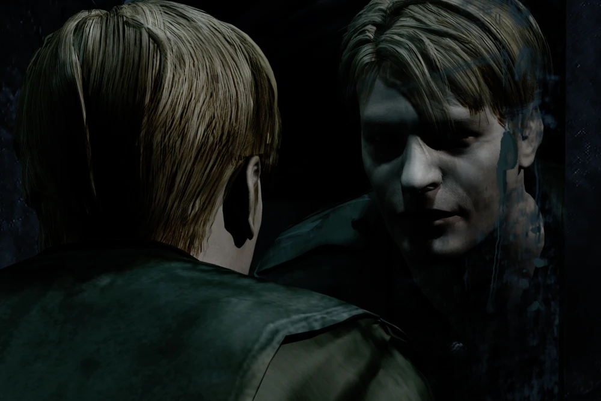

Heather Mason, Simbolo da Maturidade feminina

"Voce querendo ou nao, sofrer é humano e faz parte disso - Heather Mason S3

Todas as novidades da franquia Silent Hill

"Voce querendo ou nao, sofrer é humano e faz parte disso - Heather Mason S3

Hospital: Brooke Heaven
Monstro iconico, encontrado no cenario do hospital.

Cidade: Cidade, Silent Hill
Monstro mais temido, o executor das almas que vagam sem rumo.

Pesadelo: Angela Orosco
Monstro, o inferno de Angela Orosco.

Inferno: O inferno, o amor de James SUnderland
Ela o amou e ele ainda a ama.

Culpado Assasino?
ele vai ate o inferno por um amor